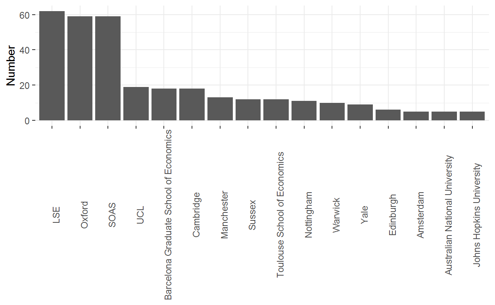
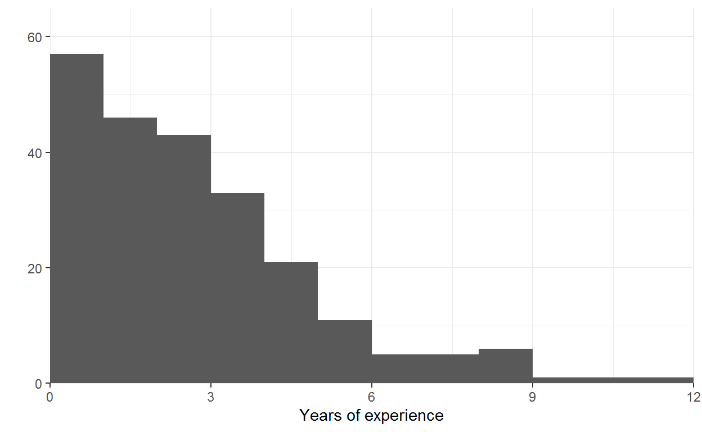

An analysis of the data (part 1)
I was an ODI Fellow between 2012-2014, which were two incredible years. I couldn’t recommend the program more, though this opinion is not shared by all ex-Fellows. The inspiration for this blog post comes from one I read looking at the skills and backgrounds of data scientist. This blog does something similar for ODI Fellows.
This will be the first of two posts. Here I examine what Fellows did prior to their Fellowship; what did they study and what work experience did they have. The second will focus on what Fellows did afterwards; what jobs did they get and in what organisations.
Getting an ODI Fellowship is competitive. Every year there are about 50 places, in 2017 and 2018 there were 795 and 749 applicants respectively. This is an acceptance rate of about 6-7%. This is lower than for undergraduate study at Oxford, about 15%, and similar to Yale and Princeton, about 6.5%. None the less, in terms of applications, the Fellowship is less competitive than programs such as the World Bank YPP, which has an acceptance rate of less than 1%.
Throughout I rely in publicly(-ish) avaliable data. The two data sources are the ODI Fellowship handbooks produced every year by ODI and data on individuals from LinkedIn. I wrote code to largely automate the data acquisition process, though such methods are not without controversy.
The Fellowship handbooks identify 419 individuals starting a Fellowship between 2011 and 2019. However, my web scrapper only pulled in data for 391 and my cleaning script only identified 242 of these having started a Fellowship. The majority of this analysis is on these 242 individuals.
The majority, 63%, were working while the remaining 37% report being in education. Of those in education every single person was completing their master’s degree, no one reported to have completed their PHD immediately prior to starting a Fellowship. The interactive map below shows where Fellows were immediately prior to their Fellowship.
The ODI Fellowship handbooks provide data on the universities attended by Fellows typically for their masters. There are 82 universities represented in total. However, 68% of Fellows studied at just ten universities. The graph below shows the number of Fellows from the top 16 universities as well as showing the relative dominance of just three; LSE, Oxford and SOAS.

If you are considering where to do your masters and really want a Fellowship, then you should study at LSE, Oxford or SOAS.
While a masters is neccesary only 1.5% of Fellows had completed their PHD prior to starting their ODI Fellowship. Individuals with PHDs either don’t apply or don’t get accepeted, either way if you are currently completing or have a PHD then successfully applying for an ODI Fellowship would put you in the minority.
Most Fellows report what they studied both at Bachelors and at Masters, both of which I examine here.
The graph below shows the field of study for bachelor’s degrees obtained by Fellows. The vast majority of Fellows did straight Economics or Economics combined with something else (e.g. ‘Economics and Politics’ or ‘Economics with Finance’).
There were a wider diversity of master’s course titles, I have encoded these slightly differently. Straight Economics masters and Development Economics are the majority.
In general, people don’t list the grades they achieved when studying, 52% don’t list a grade for bachelors while for masters this is 62%. There is likely to be some selection bias here, where those that choose to list their grade having achieved top marks. While those that merely achieved a 2:1 (like myself) choosing not to list their grade. In some cases, I was unable to determine the meaning of the grade listed.
| Grade | Percentage |
|---|---|
| Missing | 52% |
| First | 28% |
| 2:1 | 12% |
| Unknown | 8% |
| Subject | Percentage |
|---|---|
| Missing | 62% |
| Distinction | 27% |
| Unknown | 7% |
| Merit | 4% |
In short, not all. Apart from internships (and some waitering) I did not have any work experience to speak of when I applied, nor do I list any work experience prior to my Fellowship on my LinkedIn. That puts me in a minority, only 11 (5%) of individuals list no work experience on their LinkedIn profile prior to their Fellowship.
The histogram below shows the amount of work experience prior to starting a Fellowship. The mean amount of work experience reported was 2.7 years and the median 2.2 years, suggesting that ODI’s description of the scheme as picking “early career” economists is accurate.

Categorising the large variety of titles and workplaces took a bit of judgement. The most common job title was “Consultant”, but this was only used by 7% of people. Variations on “Consultant” such as “Economic Consultant” made up 19%. I have also included some examples of the job titles captured under each category.
| Category | Percentage | Examples |
|---|---|---|
| Researcher | 27% | Researcher, Research Assistant, Research Fellow, Research Officer |
| Consultant | 19% | Consultant, Economic Consultant, Short term consultant |
| Economist | 14% | Economist, Assistant Economist |
| Analyst | 11% | Analyst, Research Analyst, Financial Analyst |
| Other | 10% | |
| Policy Advisor | 6% | Policy Advisor, Policy Officer |
| Intern | 6% | |
| Project Manager/Assistant | 5% | Project Manager, Process Manager, Project leader, Project assistant |
| Statistician | 1% |
| Workplace | Percentage |
|---|---|
| Private sector | 22% |
| University | 20% |
| Charity and non-profit | 19% |
| International public sector | 17% |
| UK Government | 13% |
| Other Government | 9% |
Join me next time when I look at whether Fellows quit early, what jobs they get after their postings and in what organisations.